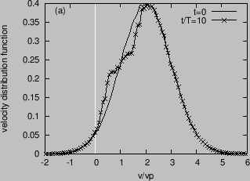

Next: Density fluctuation induced by Up: Particle simulation of wave Previous: Nonlinear Landau damping
Choose a drift-Maxwellian distribution
| (11) |
Figure 3 compares the velocity distribution function at
 and
and
 , which shows that the distribution
is flatted in the resonant region
, which shows that the distribution
is flatted in the resonant region
 . Figure 4 plots
the temporal evolution of the total kinetic energy of the particles, which
confirms that the kinetic energy is reduced by the wave.
. Figure 4 plots
the temporal evolution of the total kinetic energy of the particles, which
confirms that the kinetic energy is reduced by the wave.
|  |